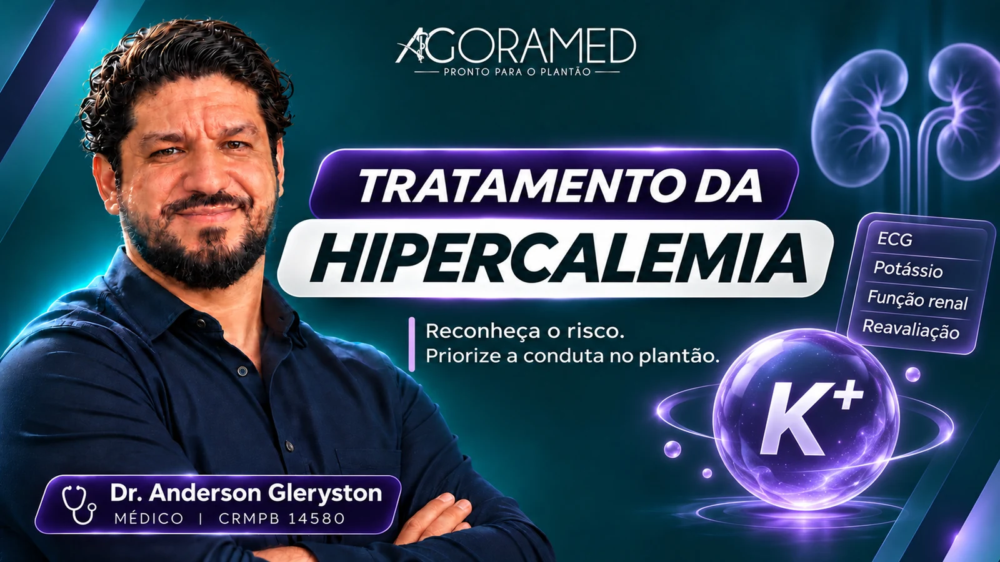

Fundamentos do potássio
Distribuição, função renal e mecanismos da hipercalemia.
Dr. Anderson Gleryston CRMPB 14580
CURSO ONLINE · ADULTOS · EM PRODUÇÃO
Da avaliação inicial à reavaliação: organize as decisões no tratamento da hipercalemia.
Quero ser avisadoPara internos, recém-formados e médicos
que atuam no plantão.
Aprenda a reconhecer, avaliar e tratar a hipercalemia na prática clínica. Entenda como priorizar a proteção cardíaca, a redistribuição e a remoção do potássio, acompanhando a resposta ao tratamento. Casos clínicos e orientações práticas para fundamentar suas decisões no plantão.
O QUE VOCÊ VAI APRENDER
Avaliação do risco, medidas de tratamento, reavaliação e prevenção de recorrências no adulto.

PROGRAMA PROPOSTO · 12 EIXOS DE APRENDIZADO
Distribuição, função renal e mecanismos da hipercalemia.
Hemólise, pseudohipercalemia e interpretação da amostra.
Avaliação do risco e reconhecimento das prioridades.
Papel do cálcio, indicações e limitações.
Insulina e glicose, beta-agonistas e o contexto do bicarbonato.
Diuréticos e quelantes: possibilidades e limitações.
Refratariedade e integração com a avaliação nefrológica.
Potássio, glicemia, resposta terapêutica e efeito rebote.
Investigue o desencadeante e revise a prescrição.
Doença renal, insuficiência cardíaca e alterações metabólicas.
Hipoglicemia, falhas de monitorização e armadilhas da conduta.
Integre decisões e planeje a prevenção de recorrências.
APRENDA DECIDINDO
Proposta de atividades: AgoraQuiz e Plantão Virtual.
Referência para o programa: diretriz da UK Kidney Association sobre hipercalemia em adultos.
Curso em produção. O programa e as atividades apresentados serão desenvolvidos progressivamente.
QUEM VAI GUIAR SEU APRENDIZADO
CRMPB 14580
Médico e educador. Conhecimento conectado às situações e decisões da prática clínica.
Conheça minha históriaACOMPANHE O LANÇAMENTO
Curso em produção. Acompanhe as novidades da AgoraMed.
Quero ser avisadoEnvie seu interesse por e-mail para acompanhar o lançamento.
Se preferir, escreva para drandersongleryston@gmail.com.